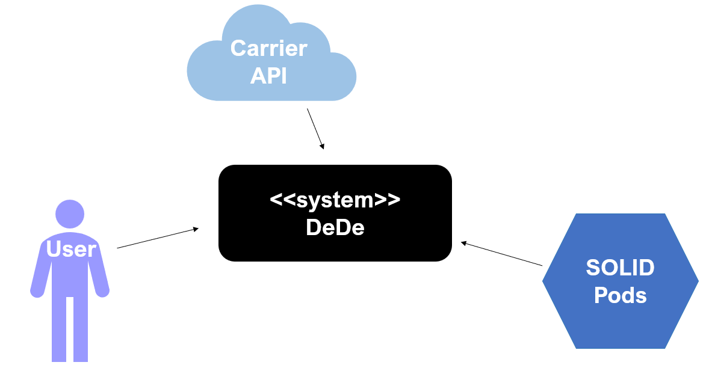
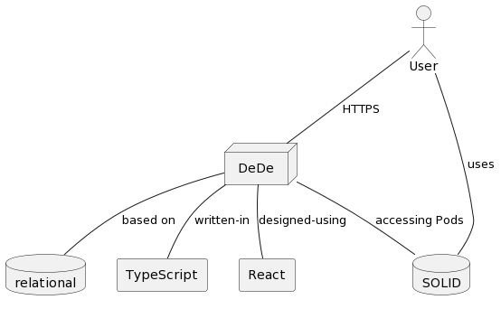
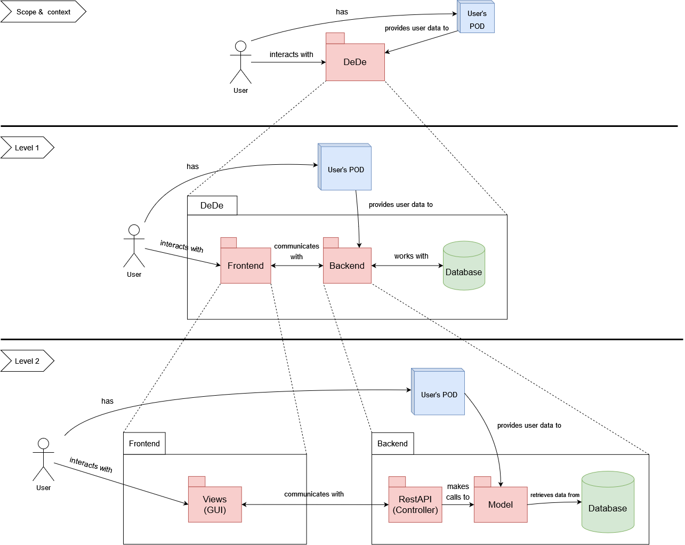
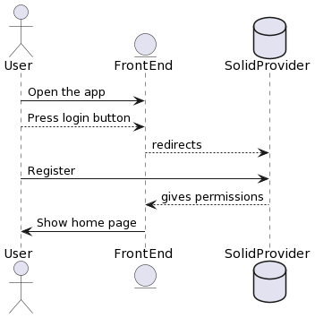
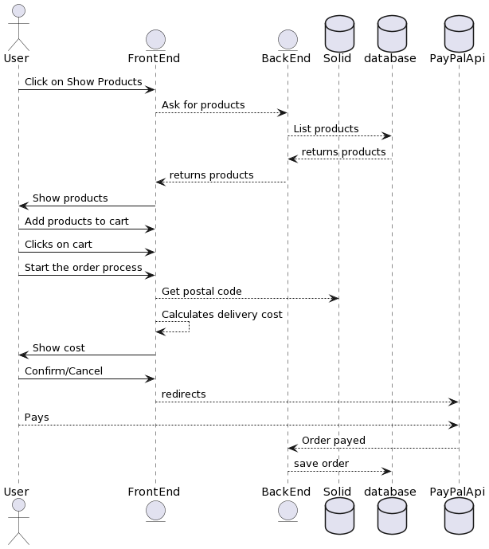
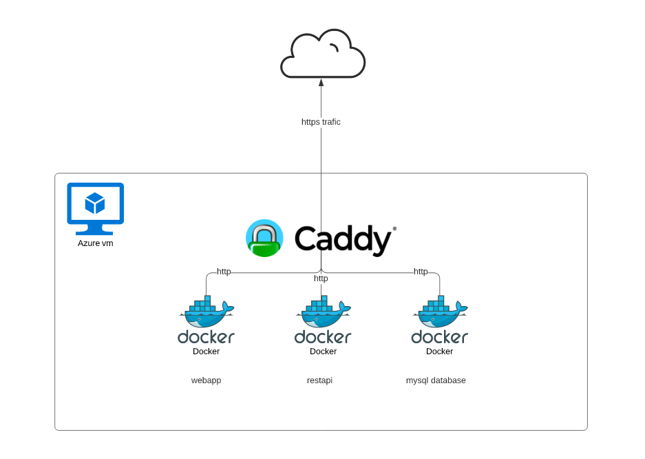
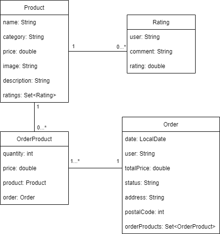
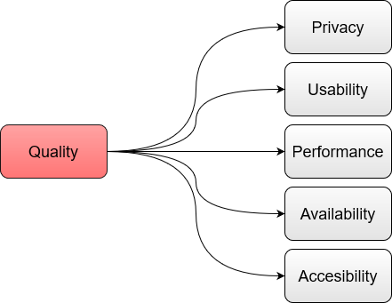

1. Introduction and Goals
A retail company is in the need for an online retail system that ensures the privacy of its users based on the Solid specification (not to be misinterpreted with the SOLID principles of Object Oriented Programming). We will call this app DeDe (Decentralized Delivery).
Moreover, this will be ensured with the utilization of Solid Pods; a specification that lets people store their data securely in decentralized data stores. This grants the user total control of the data that is exposed using this retail service delivery, since they can concede or revoke access when needed (and the app will not store personal info).
1.1. Requirements Overview
-
Emulation of an online shopping system where the user can select and order products.
-
Like any other web app but in a reduced way.
-
-
Calculation of the delivery cost based on the address of the user in their Pod.
-
The cost is based on an external API.
-
-
Simulation of the process of buying a product.
-
The user can buy a product and add it to the shopping cart.
-
There is a list of products for the user to buy.
-
-
Allowing the user to access the orders previously done.
-
Like checking the search history in your browser.
-
-
Implementation using React and Typescript.
-
This will be for the front-end, for the back-end we will use other frameworks such as SpringBoot.
-
-
The aplication should be accessible and deployed using a continuous integration system.
-
That means having a hosting service in which we can access the service.
-
1.2. Quality Goals
| Number | Quality | Motivation |
|---|---|---|
1 |
Privacy |
The task to be done requires the use of SOLID, whose purpose is to secure the data of the users, so no one that is not authorized should be able to access that information. |
2 |
Usability |
The application can be used in an easy and intuitive manner, for all kinds of users. |
3 |
Performance |
The software should be fast and have as least response time as possible. |
4 |
Availability |
The system should be able to be used for as much time as possible. |
1.3. Stakeholders
| Role/Name | Contact | Description | Expectations |
|---|---|---|---|
Students |
Diego Martín Fernández |
The members of the team that is going to develop this project. |
They are expected to deliver a functional version of this product with the use of several different technologies, and which meets the stated requirements. |
Teachers |
Pablo González González |
Qualified instructors who are able to teach, guide, and supervise students throughout the development process. |
The teachers are expected to evaluate the work of the students and to help them achieve their objective. |
Users |
The ones that will make use of the application. |
They are expected to use the application for some purpose, and possibly to even give feedback about it. |
|
Related companies |
Inrupt\Empathy |
Companies that have contributed to the creation of the SOLID Challenge, which is closely related to this project. |
They promote the SOLID Challenge, help solving errors through its forum, and reward the winning project. |
2. Architecture Constraints
We divide the constrains into two parts: technical and business constrains.
2.1. Technical constraints
Technical constraints are those that are fixed technical constraints decisions. Most of them appear in the description of the system.
| Constraint | Description |
|---|---|
React |
React defines itself JavaScript library for building user interfaces. The application has to be implemented using React |
TypeScript |
TypeScript is a strongly typed programming language that builds on JavaScript. |
SOLID principles |
Solid is a specification that lets people store their data securely in decentralized data stores called Pods. When data is stored in someone’s Pod, they control its access. |
Continuous integration system |
The application has to be accessible and deployed using a continuous integration system. |
GitHub |
The code has to be deployed in GitHub, a public repository. |
2.2. Business constraints
The business constraints are those decisions affecting the software architecture design or that will affect future decisions.
| Constraint | Description |
|---|---|
Schedule |
The system has to be finished by the 13th week of the laboratory, with deliveries by the 4th, the 7th and the 10th weeks. |
Team |
The team is composed by only three people. |
Students |
All of us are students with more subjects and projects, so we can not dedicate full time to the project. |
Keep track of orders done |
The system has to allow users to visualize the orders done, so it has to keep track of them. |
3. System Scope and Context
3.1. Business Context

| Entity | Description |
|---|---|
User |
Interacts with system by viewing, selecting and buying products. Users have an account in the system that lets them visualize orders done. |
SOLID pods |
They have information about client’s addresses. The system obtains this information to calculate shipping costs and process orders. |
Paypal API |
During checkout process, DeDe uses the PayPal API to allow clients to play for their order. |
3.2. Technical Context
The system will follow the SOLID specification by which the user’s privacy will be preserved. This means non storing personal information and using "pods" (Personal Online Data Store), where the customer’s personal data is stored.
All the application will be developed by using Typescript and the React framework. Using React will allow us to create interactive user interfaces in an easy way.
We are going to use a relational database to store the information about the products. We have chosen MySQL for this.

4. Solution Strategy
4.1. Technology commitments
As we commented before we will use React and TypeScript. Moreover, we have also decided that the most optimal decision regarding the database of the product is a relational one, such as MySQL.
This is due to the need of knowing the relations between the different items such as clients, products bought from clients, records, deliveries and so on. On the other hand, the experience that we already have will be of great use, since all of us are experienced in SQL databases usage.
4.2. Decisions about the top-level decomposition of the system
We have chosen to build the application around the MVC model. This means that the system will be divided into a View part, which will be the one the user interacts with, a Model part, that will work with data, and a Controller part, that will connect the other two, acting as an intermediary.
4.3. Decisions on how to achieve key quality goals
The goals have already been stated in section 1.2, now we will take a look at how we will work to achieve each one:
Privacy will be accomplished mainly through the use of SOLID pods, and using only the information that is necessary for the operations to work.
We will obtain usability by making easy and understandable interfaces for the users, that can be understood by people that are not necessarily experts in working with computers.
As for the performance, we will work hard to make optimized code, that does not introduce unnecessary complexity and can reduce response times as much as possible.
Finally, the availability will be achieved by making sure that when the user wants to access and use the application, it initializes correctly and does what it is supposed to do.
4.4. Relevant organizational decisions
Working in a project such as this one with many people means that communication is very important, and there are several ways in which our team communicates on a regular basis.
- Laboratory classes
-
Each week we have 2 hours in which all the members of the team are together and can discuss things about the project. It is also a very useful time to review the work done in the previous week and goals for the future.
- GitHub
-
GitHub is a very complete tool, that has tons of options that can help with organizing the work of the project. You can see what needs to be done, what has already been done, what are the plans for the future, all of this combining tools such as the issues, discussions or the wiki of the repository (among many others). It also helps a lot in organizing the changes made in the code or the files of the repository, through the use of pull requests.
- Communication channels
-
We have created a Whatsapp group, where we talk about things related to the project. All of the relevant things that have to do with decisions of the development of the system are also put in GitHub, as it helps with keeping track of these important details. Other means of communication that we sometimes use are Discord or Microsoft Teams.
5. Building Block View
The building block view shows the static decomposition of the system into building blocks (modules, components, subsystems, classes, interfaces, packages, libraries, frameworks, layers, partitions, tiers, functions, macros, operations, datas structures, …) as well as their dependencies (relationships, associations, …)
This view is mandatory for every architecture documentation. In analogy to a house this is the floor plan.
Maintain an overview of your source code by making its structure understandable through abstraction.
This allows you to communicate with your stakeholder on an abstract level without disclosing implementation details.
The building block view is a hierarchical collection of black boxes and white boxes (see figure below) and their descriptions.

Level 1 is the white box description of the overall system together with black box descriptions of all contained building blocks.
Level 2 zooms into some building blocks of level 1. Thus it contains the white box description of selected building blocks of level 1, together with black box descriptions of their internal building blocks.
Level 3 zooms into selected building blocks of level 2, and so on.
5.1. Whitebox Overall System

5.2. Scope and context
- Motivation
-
The user creates and interacts with its own Pod and with de DeDe system. The DeDe system has access to the user’s pod.
| Building block | Description |
|---|---|
DeDe |
Online retail system that preserves the privacy of its users by following the SOLID principles. |
User’s Pod |
The user’s Pod is where the user stores its data to control it. |
User |
Person accessing to the DeDe system and that has its own Pod. |
- Important Interfaces
-
To do
5.3. Level 1
- Motivation
-
The DeDe system is expanded in order to give more details about its internal implementation
| Building block | Description |
|---|---|
Frontend |
The part that is seen by the user when using the application. |
Backend |
The part of the application that deals with its logic and communicates with the database. |
Database |
Database used by the DeDe system to store the needed information, such as the orders done, the addresses, etc. In our case we will use a MySQL database. |
5.4. Level 2
- Motivation
-
The frontend and the backend are expanded to give a further insight into its composition
| Building block | Description |
|---|---|
Views (GUI) |
Contains all the user interfaces of the online shop. The user interacts with them to see and select products, visualize past orders and confirm the purchase, among others. |
Controller (RestAPI) |
It is implemented following the RestAPI architecture. Responds to user events in the views by invoking corresponding actions in the model. It is an intermediary. |
Model |
Implements all the business logic needed. Accesses the database to retrieve products and clients and to register orders. Besides, it obtains clients' addresses from their PODs. |
6. Runtime View
===LogIn
The user can log in into the application at any time during navigation, following the next diagram:

6.1. User interaction
The user will follow the next diagram in order to order some products:

7. Deployment View

- Motivation
-
The motivation of this project is to have a functional webapp deployed.
For this purpose we will use Azure. The application is deployed by using GitHub actions over ssh and docker, since there is a container for each of the elements that are inside the VM: * WebApp: with React * Restapi: in SpringBoot * Database: using MySQL
- Github Actions and SSH
-
Github actions is a series of scripts executed inside a virtual machine on github, you can even set up docker containers or databases (although they are short lived). An example could be to set up a database before running the test that the restapi has.
We are using GitHub actions for automating the process described above. We connect to the VM instance using SSH and deploy the application inside it with Docker.
Github actions provides us with the hability to execute the deployment each time a new release is made, we can also change this for making it when a commit is added or a pull request is issued.
The code for this workflow is inside .github/workflows in asw2122.yml. Moreover, since the default implementation was supposed for Nodejs and, because we are using SpringBoot, we had to add new actions.
- Docker
-
Each of the containers has its own DockerFile with the instructions needed for creating the images. There are only two, for the webapp and the restapi, because we are using a mysql image from the marketplace. The ports for each image are the following (refering to the internal and external ports, they have the same value to avoid complications):
-
WebApp → 3000:3000
-
RestApi → 5000:5000
-
DataBase → 3306:3306
-
- Azure
-
Azure is the provider for this project, we are using an EC2 VM instance. Other alternatives are Amazon Web Services, Google Cloud, etc. Nowadays all of them offer pretty much the same service and the hability to change between different providers with ease.
8. Cross-cutting Concepts
This section describes overall, principal regulations and solution ideas that are relevant in multiple parts (= cross-cutting) of your system. Such concepts are often related to multiple building blocks. They can include many different topics, such as
-
domain models
-
architecture patterns or design patterns
-
rules for using specific technology
-
principal, often technical decisions of overall decisions
-
implementation rules
Concepts form the basis for conceptual integrity (consistency, homogeneity) of the architecture. Thus, they are an important contribution to achieve inner qualities of your system.
Some of these concepts cannot be assigned to individual building blocks (e.g. security or safety). This is the place in the template that we provided for a cohesive specification of such concepts.
The form can be varied:
-
concept papers with any kind of structure
-
cross-cutting model excerpts or scenarios using notations of the architecture views
-
sample implementations, especially for technical concepts
-
reference to typical usage of standard frameworks (e.g. using Hibernate for object/relational mapping)
A potential (but not mandatory) structure for this section could be:
-
Domain concepts
-
User Experience concepts (UX)
-
Safety and security concepts
-
Architecture and design patterns
-
"Under-the-hood"
-
development concepts
-
operational concepts
Note: it might be difficult to assign individual concepts to one specific topic on this list.

8.1. Domain model

8.2. Domain concepts
| Concept | Description |
|---|---|
user (Order) |
The attribute user in the Order entity refers to the webId of the user. Regarding users, we only store their webId in hexadecimal form tied to the order. |
image (Product) |
We store the image as a link to an external site where it is stored. |
Rating |
Users can leave a review consisting of a comment and a numerical rating in every existing product through the product detail view. |
user (Rating) |
Ratings can be anonymous, in that situation, "user" value is "Guest". In case the user is logged in, "user" contains the name stored in the POD. |
status (Order) |
Makes reference to the shipping status. It has three possible values: "PROCESSING", "SHIPPED" and "RECEIVED". |
8.3. User experience
-
The shopping cart is at the upper-right corner, represented with the typical cart icon.
-
Login is at the left of the cart.
-
DeDe logo takes to the home page.
-
Order detail view has a status progress bar to make it easy to see in which state the order is and what is left to be received.
-
Checkout process follows the usual steps: order overview, payment and order completed message.
-
Side bar button in the upper-left corner and contains direct links to the homepage and products accesible from anywhere.
-
Footer at the bottom with About us page and links to resources relevant to the project.
The entire web is in English, but to make it accesible to more users, the idea would be to internationalize it in the future, specially in Spanish.
8.4. Security
Users do not create an account in DeDe website, they have all their information stored in their own POD. We only store the address and postal code when an order is made to guarantee delivery of the purchased products. Besides, such information is tied to the order and never used for any other purpose. WebId is also saved with the order to allow users to check their order history and current order status. In case there is no address in the POD, a direct way to add one is provided through the website, but always with the permission of the user and storing only the information they provide for that purpose.
9. Design Decisions
Design decisions sort by relevance.
| Design decision | Context | Decision | Consequences |
|---|---|---|---|
Backend language |
We need a backend language and framework to implement all the data storage related functionality. |
Java with Spring Boot framework |
We don’t need to spend time learning how to use it because we already have experience. Every deploy-related configuration file given to us ended up being made for Node.js, so we have to spend time learning how to adapt it to Java. |
Application architecture |
Architectural pattern used to structure the application |
MVC |
We have previous experience using this pattern along with Spring Boot and it’s easy to understand and implement. |
Database |
We need a database to store products and orders |
MySQL |
We practically only have experience with relational databases, so by using MySQL we don’t need to investigate how to use a non relational one. As a downside, since the only a few tables are needed maybe it would have been simpler to use a document based db. |
User login |
We need a way to identify users in order to show order history |
Use pod login (@inrupt/solid-ui-react and @inrupt/lit-generated-vocab-common libraries) and don’t store accounts |
We don’t have to deal with password encryption or with account information. We integrate pod login in our application front-end so the pod provider is the one in charge of all the information. Orders are linked to the pod webId. We depend on an external service that sometimes does not provide the best service. |
Shopping cart architecture |
We have to decide whether to store the shopping cart in client side or server side |
Shopping cart stored in the client side |
The number of calls from the front end to the backend is minimized, so performance improves. The shopping cart content is only sent to the backend during checkout. |
Payment |
We need a way to allow clients to pay for their orders |
Paypal API |
We integrate Paypal API into our application so we don’t need to spend much time dealing with more complex infrastructures. |
Product images |
We need to show product images |
Links to external website |
No need to deal with image storage and transfer from back end to front end. We depend on an external website that may be down or delete any image. |
10. Quality Requirements
We have already talked about quality goals in section 1.2, but in this section we will expand on that topic, using a quality tree (which will provide an overview of the attributes) and some quality scenarios (which will describe what happens when a stimulus arrives at the system).
10.1. Quality Tree

10.2. Quality Scenarios
| Quality requirement | Quality scenario | Priority | Difficulty |
|---|---|---|---|
Privacy |
The application will not access any data of the user without being granted permissions beforehand. Only the data necessary for the correct functioning of the application will be accessed and used. |
High |
Medium |
Usability |
The application can be used in an intuitive manner. It should be easy to do the operations in the correct way. |
High |
Medium |
Performance |
The users should be able to complete all the operations of the application in a reasonable amount of time (the response time of every operation might be different, but it should not surpass 3 seconds) |
High |
Medium |
Availability |
Any time the user wants to use the application it is accessible and runs properly |
High |
Easy |
Accessibility |
Users with disabilities should also be able to use the application. They should be provided several different alternatives for doing operations. We will aim for reaching the AA Web Accessibility Guidelines. |
Medium |
Medium |
11. Risks and Technical Debts
11.1. Risks
The risks that we might find during the development of the project are the following (ordered by priority):
| Risk | Remediation |
|---|---|
Small team |
Prioritize the most important things, as we will probably not have much time to do several extra things |
Lack of time |
Be as effective as possible with the time we have, keep realistic expectations of what we can achieve in a given span of time |
No previous knowledge of React, Typescript nor SOLID |
Spend some time learning the basics of this technologies, and build upon that basis to get the knowledge required for working with these technologies in our project |
Now we talk about some technical debts, that are also ordered by importance
| Debt | Explanation |
|---|---|
Using Springboot and MySQL technologies |
At the beginning of the project they looked like a good choice as many members of the team had some experience working with them, but as it progressed we started having some problems, that would not have happened using other technologies |
Storing the address in a note in the POD |
As an alternative for accessing the address stored directly in the POD, we decided to retrieve it from a note, as we had some problems getting it using the other way |
12. Glossary
| Term | Definition |
|---|---|
Azure |
Azure is a very big collection of servers and networking hardware, which runs a complex set of distributed applications. |
Caddy |
Reverse Proxy used and file server |
Continuous Integration |
Introduce changes to the system as fast as possible in order to detect errors early |
Docker |
Open source containerization platform. It enables developers to package applications into containers. |
React |
JavaScript library that helps building efficient interfaces for applications |
Rest API |
An application programming interface (API or web API) that conforms to the constraints of REST architectural style and allows for interaction with RESTful web services |
SOLID |
Solid is a specification that lets people store their data securely in decentralized data stores called Pods. |
SOLID PODs |
They have information about client’s addresses. The system obtains this information to calculate shipping costs and process orders. |
SpringBoot |
Tool that makes developing web application and microservices with Spring Framework faster and easier, as it helps with several aspects of the configuration. |
TypeScript |
Language built upon JavaScript that takes into account types |
About arc42
arc42, the Template for documentation of software and system architecture.
By Dr. Gernot Starke, Dr. Peter Hruschka and contributors.
Template Revision: 7.0 EN (based on asciidoc), January 2017
© We acknowledge that this document uses material from the arc 42 architecture template, http://www.arc42.de. Created by Dr. Peter Hruschka & Dr. Gernot Starke.